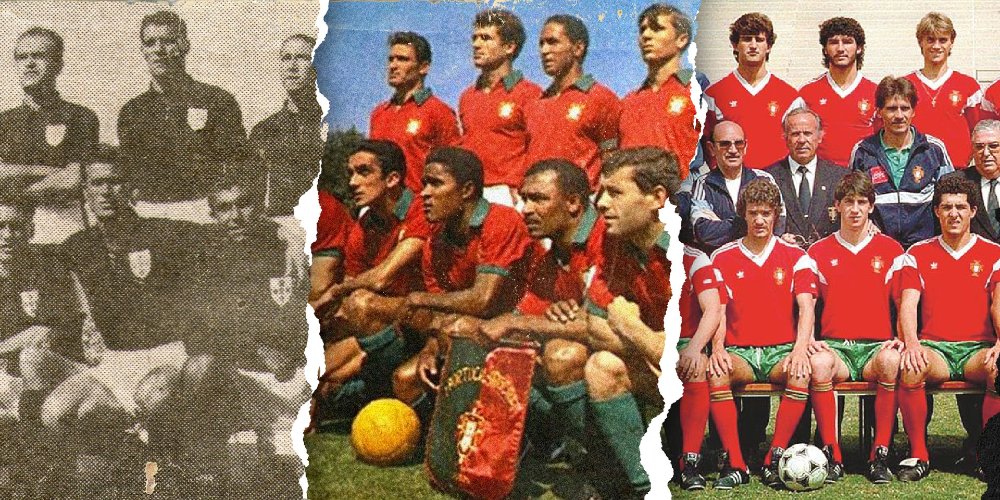
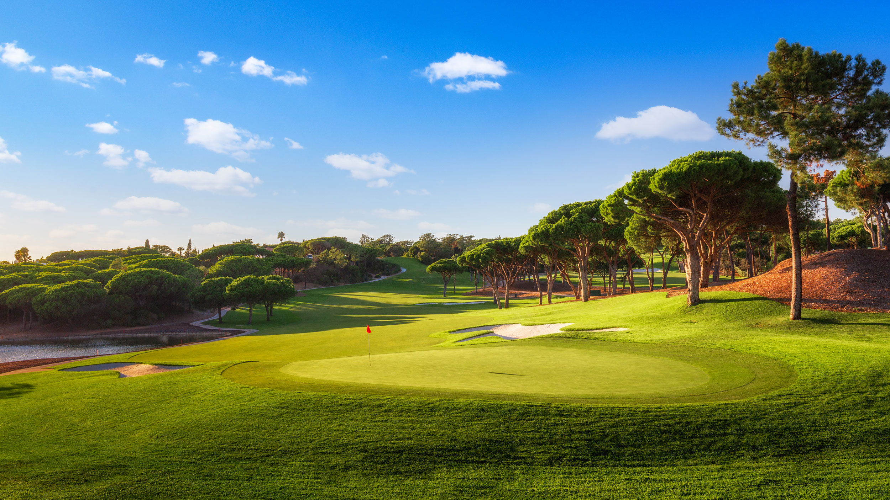
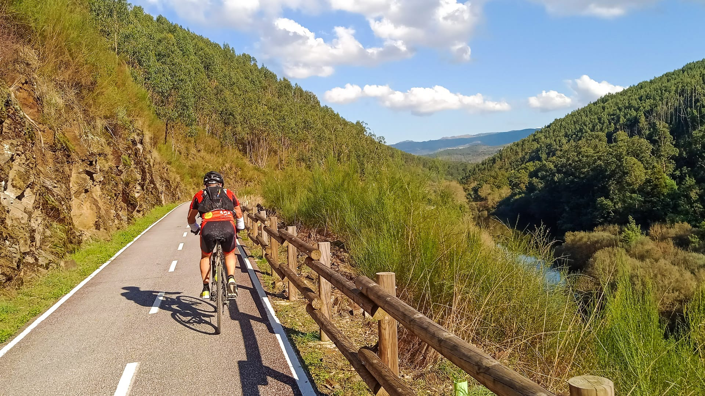
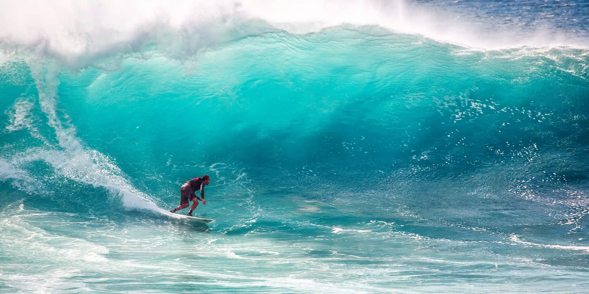

Football Heritage
Visit iconic stadiums, attend matches, and explore the rich football culture that defines Portuguese sports.

Golf Courses
Play on award-winning championship golf courses set against stunning coastal and mountain backdrops.

Hiking Trails
Trek through diverse landscapes from coastal paths to mountain ranges, with trails for all skill levels.

Water Sports
Experience kitesurfing, windsurfing, kayaking, and stand-up paddleboarding in pristine waters.

Cycling Routes
Explore scenic cycling paths through vineyards, coastal roads, and historic villages on two wheels.

Surfing Paradise
Ride world-class waves along Portugal's Atlantic coast, from beginner-friendly beaches to championship surf spots.